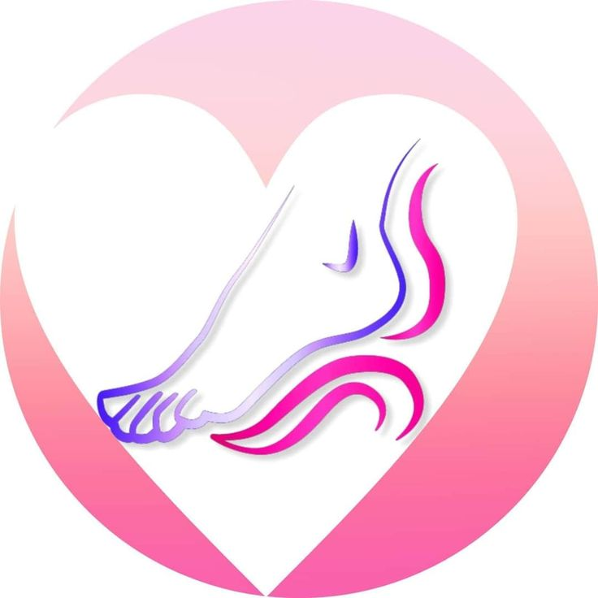
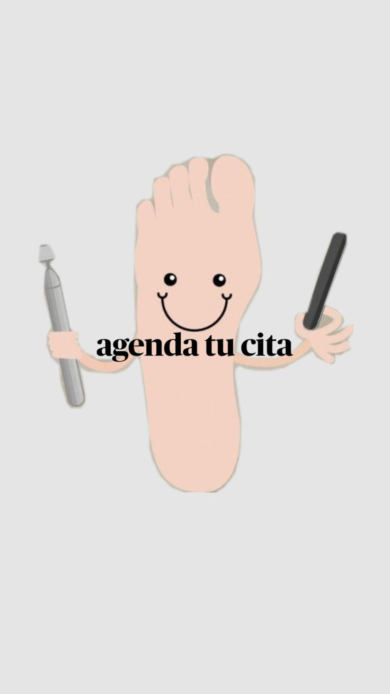

Atencion en Consultorio y a Domicilio
Reservar Cita InstagramOfrecemos servicios de corte y limpieza de uñas para mantener tus pies saludables.
Tratamiento especializado para el cuidado de uñas encarnadas y prevención de infecciones.
Eliminación segura y efectiva de callos y durezas para aliviar el dolor y mejorar la comodidad.
Ofrecemos atención especializada para el cuidado del pie diabético, incluyendo prevención, tratamiento de úlceras y manejo de complicaciones.
Brindamos servicios de podología a domicilio para pacientes que requieren atención personalizada en la comodidad de su hogar.
Eliminación segura y efectiva de helomas para aliviar el dolor y mejorar la comodidad.
Tratamiento especializado para el cuidado del pie de atleta, incluyendo prevención y tratamiento de infecciones.
Procedimiento para reconstruir y mejorar la apariencia de las uñas.
Tratamiento con Brackets
Servicio de Reflexologia
Unos minutos para Relajar sus pies cansados
Profesional en podología con amplia experiencia en el cuidado de pies diabéticos y otros problemas podológicos. Para más información o para agendar una cita, contáctanos:
Teléfono: 221-5523023
Instagram: il piú bello_la plata
Dirección: 146 N 1402 esquina 61
ciudad: Los Hornos/La Plata
Horario de Atención: Lunes a Viernes de 9:00 a 18:00
